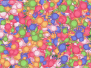
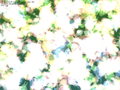
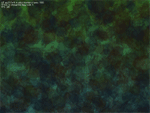

Пример 07 - Тысячи зайцев
Этот пример показывает мощь рендеринга HGE и использование различных режимов
смешивания.



Создание спрайтов
Мы пропустим все технические подробности в этот раз и сразу вступим в дело. Сначала мы должны
создать и проинициализировать несколько спрайтов, используемых для "игровых объектов" и отображения
заднего фона. Заметьте, как спрайт заднего фона будет создан из меленького тайла размерами 64x64:
HTEXTUTE tex, bgtex;
hgeSprite *spr, *bgspr;
tex=hge->Texture_Load("zazaka.png");
spr=new hgeSprite(tex,0,0,64,64);
spr->SetHotSpot(32,32);
bgtex=hge->Texture_Load("bg2.png");
bgspr=new hgeSprite(bgtex,0,0,800,600);
bgspr->SetBlendMode(BLEND_COLORADD | BLEND_ALPHABLEND);
bgspr->SetColor(0xFF000000,0);
bgspr->SetColor(0xFF000000,1);
bgspr->SetColor(0xFF000040,2);
bgspr->SetColor(0xFF000040,3);
Инициализация массива игровых объектов
Теперь мы должны создать массив, содержащий свойства наших "игровых объектов" и заполнить его
случайными значениями:
#define MAX_OBJECTS 2000
struct sprObject
{
float x,y;
float dx,dy;
float scale,rot;
float dscale,drot;
DWORD color;
};
sprObject* pObjects;
int nObjects;
pObjects=new sprObject[MAX_OBJECTS];
nObjects=1000;
for(i=0; i<MAX_OBJECTS; i++)
{
pObjects[i].x=hge->Random_Float(0,SCREEN_WIDTH);
pObjects[i].y=hge->Random_Float(0,SCREEN_HEIGHT);
pObjects[i].dx=hge->Random_Float(-200,200);
pObjects[i].dy=hge->Random_Float(-200,200);
pObjects[i].scale=hge->Random_Float(0.5f,2.0f);
pObjects[i].dscale=hge->Random_Float(-1.0f,1.0f);
pObjects[i].rot=hge->Random_Float(0,M_PI*2);
pObjects[i].drot=hge->Random_Float(-1.0f,1.0f);
}
Изменение метода смешивания
Аункция SetBlend принимает значения из промежутка 0..4 и настраивает метод смешивания
спрайтов игровых объектов и цветов из массива игровых объектов:
void SetBlend(int blend)
{
static int sprBlend[5]=
{
BLEND_COLORMUL | BLEND_ALPHABLEND | BLEND_NOZWRITE,
BLEND_COLORADD | BLEND_ALPHABLEND | BLEND_NOZWRITE,
BLEND_COLORMUL | BLEND_ALPHABLEND | BLEND_NOZWRITE,
BLEND_COLORMUL | BLEND_ALPHAADD | BLEND_NOZWRITE,
BLEND_COLORMUL | BLEND_ALPHABLEND | BLEND_NOZWRITE
};
static DWORD sprColors[5][5]=
{
{0xFFFFFFFF, 0xFFFFE080, 0xFF80A0FF, 0xFFA0FF80, 0xFFFF80A0},
{0xFF000000, 0xFF303000, 0xFF000060, 0xFF006000, 0xFF600000},
{0x80FFFFFF, 0x80FFE080, 0x8080A0FF, 0x80A0FF80, 0x80FF80A0},
{0x80FFFFFF, 0x80FFE080, 0x8080A0FF, 0x80A0FF80, 0x80FF80A0},
{0x40202020, 0x40302010, 0x40102030, 0x40203010, 0x40102030}
};
if(blend>4) blend=0;
nBlend=blend;
spr->SetBlendMode(sprBlend[blend]);
for(int i=0;i<MAX_OBJECTS;i++)
{ pObjects[i].color=sprColors[blend][hge->Random_Int(0,4)]; }
}
Обновление и отрисовка сцены
В функции кадра мы проходим через весь массив игровых объектов, вычисляем их новые координаты и
рисуем их на экране:
hge->Gfx_BeginScene();
bgspr->Render(0,0);
for(i=0;i<nObjects;i++)
{
pObjects[i].x+=pObjects[i].dx*dt;
if(pObjects[i].x>SCREEN_WIDTH || pObjects[i].x<0)
{ pObjects[i].dx=-pObjects[i].dx; }
pObjects[i].y+=pObjects[i].dy*dt;
if(pObjects[i].y>SCREEN_HEIGHT || pObjects[i].y<0)
{ pObjects[i].dy=-pObjects[i].dy; }
pObjects[i].scale+=pObjects[i].dscale*dt;
if(pObjects[i].scale>2 || pObjects[i].scale<0.5)
{ pObjects[i].dscale=-pObjects[i].dscale; }
pObjects[i].rot+=pObjects[i].drot*dt;
spr->SetColor(pObjects[i].color);
spr->RenderEx(pObjects[i].x, pObjects[i].y,
pObjects[i].rot, pObjects[i].scale);
}
hge->Gfx_EndScene();
Полный исходный код с детальными комментариями для этого примера можно найти в директории tutorials\tutorial07.
Требуемые медиа файлы можно найти в директории tutorials\precompiled.
Пользуйтесь клавишами стрелки Вверх и Вниз, чтобы менять количество игровых объектов,
и Пробел, чтобы изменить метод смешивания и клавишу ESC для выхода.
|